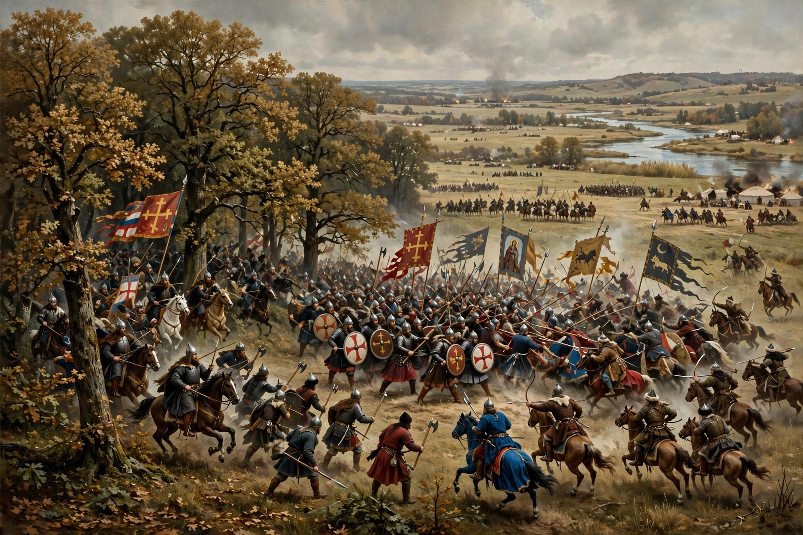

| Battle of Kulikovo | ||
|---|---|---|
| Part of the Mongol invasion of Rus' | ||
| Date | 8 September 1380 | |
| Location | Kulikovo Field, near the Don River, Tula Oblast, Russia | |
| Result | Rus' victory | |
| Belligerents | ||
| United Rus' principalities led by Moscow | Golden Horde (Mamai's ulus) | |
| Commanders and leaders | ||
| Dmitry Donskoy, Vladimir the Brave, Bobrok | Mamai | |
| Strength | Estimates from c. 30,000 to 60,000 (chronicles claim far more) | Comparable; estimates vary widely |
| Casualties and losses | Very heavy — a large part of the Rus' army | Very heavy |

The Battle of Kulikovo (Russian: Куликовская битва) was fought between united armies of the Rus' principalities, led by Prince Dmitry of Moscow, and a large army of the Golden Horde under the warlord Mamai, on 8 September 1380 at Kulikovo Field near the Don River. The Russian victory did not end Tatar domination — Moscow was sacked by Tokhtamish two years later — but it became a foundational symbol of Russian resistance to the "Mongol yoke" and of Moscow's rise; Dmitry received the epithet Donskoy, "of the Don."
Mamai, a powerful emir who ruled the western Golden Horde through puppet khans, sought to reassert tribute and control over the Rus' lands and allied with Grand Duke Jogaila of Lithuania and Prince Oleg of Ryazan. Prince Dmitry of Moscow, who had already defied the Horde by defeating a Tatar force at the Vozha River in 1378, gathered contingents from most of the Rus' principalities and, blessed — tradition holds — by St Sergius of Radonezh, marched south to meet Mamai before he could join his allies, crossing the Don on 7 September.
According to the chronicles and the epic Zadonshchina, the battle opened with a duel between the monk-warrior Alexander Peresvet and a Tatar champion, in which both were killed. In the main clash the Horde's assault bent back and nearly broke the Russian centre and left wing, killing much of Dmitry's army; but at the crisis the reserve "Ambush Regiment" of Prince Vladimir the Brave and the voivode Bobrok charged out of the oak forest into the Tatar rear. The exhausted Horde army collapsed and fled, pursued for many kilometres. Dmitry was found wounded but alive beneath a felled tree, having fought in the front ranks in borrowed armour.
Mamai fled to Crimea, where he was murdered; Tokhtamish reunified the Horde and burned Moscow in 1382, restoring tribute for another century. Yet Kulikovo's prestige established Moscow as the champion of the Rus' lands and was commemorated in literature, church tradition and, in the Soviet era, as a symbol of patriotic resistance.
Zadonshchina; The Tale of the Rout of Mamai; Russian chronicle accounts.